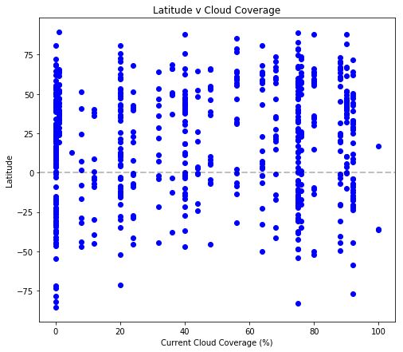

Cloud Coverage

The cloud cover plot is best compared to the humidity chart. It's rather interesting to see so many places marked at 100% humid yet there are few linking in at 100% cloud coverage. Looking at the density of the individual points, it's interesting to note how rare the idea of nearly no clouds is observed worldwide. The majority of the locations either fall into the bins 0 - 10% and 70 - 90%. The more important question that needs to be researched more would be what exacly cloud coverage means. Is it a standardized measurement, or is it just this database's own measurement?